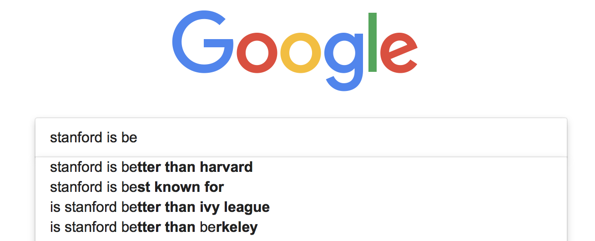

Language Models: Auto-Complete
In this assignment, you will build an auto-complete system. Auto-complete system is something you may see every day
- When you google something, you often have suggestions to help you complete your search.
- When you are writing an email, you get suggestions telling you possible endings to your sentence.
By the end of this assignment, you will develop a prototype of such a system.

Outline
- 1 Load and Preprocess Data
- 1.1: Load the data
- 1.2 Pre-process the data
- 2 Develop n-gram based language models
- 3 Perplexity
- 4 Build an auto-complete system
A key building block for an auto-complete system is a language model.
A language model assigns the probability to a sequence of words, in a way that more “likely” sequences receive higher scores. For example,
“I have a pen”
is expected to have a higher probability than
“I am a pen”
since the first one seems to be a more natural sentence in the real world.
You can take advantage of this probability calculation to develop an auto-complete system.
Suppose the user typed
“I eat scrambled”
Then you can find a wordxsuch that “I eat scrambled x” receives the highest probability. If x = “eggs”, the sentence would be
“I eat scrambled eggs”
While a variety of language models have been developed, this assignment uses N-grams, a simple but powerful method for language modeling.
- N-grams are also used in machine translation and speech recognition.
Here are the steps of this assignment:
- Load and preprocess data
- Load and tokenize data.
- Split the sentences into train and test sets.
- Replace words with a low frequency by an unknown marker
<unk>.
- Develop N-gram based language models
- Compute the count of n-grams from a given data set.
- Estimate the conditional probability of a next word with k-smoothing.
- Evaluate the N-gram models by computing the perplexity score.
- Use your own model to suggest an upcoming word given your sentence.
1 | import math |
Part 1: Load and Preprocess Data
Part 1.1: Load the data
You will use twitter data.
Load the data and view the first few sentences by running the next cell.
Notice that data is a long string that contains many many tweets.
Observe that there is a line break “\n” between tweets.
1 | with open("en_US.twitter.txt", "r") as f: |
Data type: <class 'str'>
Number of letters: 3335477
First 300 letters of the data
-------
"How are you? Btw thanks for the RT. You gonna be in DC anytime soon? Love to see you. Been way, way too long.\nWhen you meet someone special... you'll know. Your heart will beat more rapidly and you'll smile for no reason.\nthey've decided its more fun if I don't.\nSo Tired D; Played Lazer Tag & Ran A "
-------
Last 300 letters of the data
-------
"ust had one a few weeks back....hopefully we will be back soon! wish you the best yo\nColombia is with an 'o'...“: We now ship to 4 countries in South America (fist pump). Please welcome Columbia to the Stunner Family”\n#GutsiestMovesYouCanMake Giving a cat a bath.\nCoffee after 5 was a TERRIBLE idea.\n"
-------
Part 1.2 Pre-process the data
Preprocess this data with the following steps:
- Split data into sentences using “\n” as the delimiter.
- Split each sentence into tokens. Note that in this assignment we use “token” and “words” interchangeably.
- Assign sentences into train or test sets.
- Find tokens that appear at least N times in the training data.
- Replace tokens that appear less than N times by
<unk>
Note: we omit validation data in this exercise.
- In real applications, we should hold a part of data as a validation set and use it to tune our training.
- We skip this process for simplicity.
Exercise 01
Split data into sentences.
- Use str.split
1 | # UNQ_C1 (UNIQUE CELL IDENTIFIER, DO NOT EDIT) |
1 | # test your code |
I have a pen.
I have an apple.
Ah
Apple pen.
['I have a pen.', 'I have an apple.', 'Ah', 'Apple pen.']
Expected answer:1
['I have a pen.', 'I have an apple.', 'Ah', 'Apple pen.']
Exercise 02
The next step is to tokenize sentences (split a sentence into a list of words).
- Convert all tokens into lower case so that words which are capitalized (for example, at the start of a sentence) in the original text are treated the same as the lowercase versions of the words.
- Append each tokenized list of words into a list of tokenized sentences.
- Use str.lower to convert strings to lowercase.
- Please use nltk.word_tokenize to split sentences into tokens.
- If you used str.split insteaad of nltk.word_tokenize, there are additional edge cases to handle, such as the punctuation (comma, period) that follows a word.
1 | # UNQ_C2 (UNIQUE CELL IDENTIFIER, DO NOT EDIT) |
1 | # test your code |
[['sky', 'is', 'blue', '.'],
['leaves', 'are', 'green', '.'],
['roses', 'are', 'red', '.']]
Expected output
1 | [['sky', 'is', 'blue', '.'], |
Exercise 03
Use the two functions that you have just implemented to get the tokenized data.
- split the data into sentences
- tokenize those sentences
1 | # UNQ_C3 (UNIQUE CELL IDENTIFIER, DO NOT EDIT) |
1 | # test your function |
[['sky', 'is', 'blue', '.'],
['leaves', 'are', 'green'],
['roses', 'are', 'red', '.']]
Expected outcome
1 | [['sky', 'is', 'blue', '.'], |
Split into train and test sets
Now run the cell below to split data into training and test sets.
1 | tokenized_data = get_tokenized_data(data) |
1 | print("{} data are split into {} train and {} test set".format( |
47961 data are split into 38368 train and 9593 test set
First training sample:
['i', 'personally', 'would', 'like', 'as', 'our', 'official', 'glove', 'of', 'the', 'team', 'local', 'company', 'and', 'quality', 'production']
First test sample
['that', 'picture', 'i', 'just', 'seen', 'whoa', 'dere', '!', '!', '>', '>', '>', '>', '>', '>', '>']
Expected output
1 | 47961 data are split into 38368 train and 9593 test set |
Exercise 04
You won’t use all the tokens (words) appearing in the data for training. Instead, you will use the more frequently used words.
- You will focus on the words that appear at least N times in the data.
- First count how many times each word appears in the data.
You will need a double for-loop, one for sentences and the other for tokens within a sentence.
- If you decide to import and use defaultdict, remember to cast the dictionary back to a regular 'dict' before returning it.
1 | # UNQ_C4 (UNIQUE CELL IDENTIFIER, DO NOT EDIT) |
1 | # test your code |
{'sky': 1,
'is': 1,
'blue': 1,
'.': 3,
'leaves': 1,
'are': 2,
'green': 1,
'roses': 1,
'red': 1}
Expected output
Note that the order may differ.
1 | {'sky': 1, |
Handling ‘Out of Vocabulary’ words
If your model is performing autocomplete, but encounters a word that it never saw during training, it won’t have an input word to help it determine the next word to suggest. The model will not be able to predict the next word because there are no counts for the current word.
- This ‘new’ word is called an ‘unknown word’, or out of vocabulary (OOV) words.
- The percentage of unknown words in the test set is called the OOV rate.
To handle unknown words during prediction, use a special token to represent all unknown words ‘unk’.
- Modify the training data so that it has some ‘unknown’ words to train on.
- Words to convert into “unknown” words are those that do not occur very frequently in the training set.
- Create a list of the most frequent words in the training set, called the closed vocabulary .
- Convert all the other words that are not part of the closed vocabulary to the token ‘unk’.
Exercise 05
You will now create a function that takes in a text document and a threshold ‘count_threshold’.
- Any word whose count is greater than or equal to the threshold ‘count_threshold’ is kept in the closed vocabulary.
- used that you want to keep, returns the document containing only the word closed vocabulary and the word unk.
1 | # UNQ_C5 (UNIQUE CELL IDENTIFIER, DO NOT EDIT) |
1 | # test your code |
Closed vocabulary:
['.', 'are']
Expected output
1 | Closed vocabulary: |
Exercise 06
The words that appear ‘count_threshold’ times or more are in the ‘closed vocabulary.
- All other words are regarded as ‘unknown’.
- Replace words not in the closed vocabulary with the token “
1 | # UNQ_C6 (UNIQUE CELL IDENTIFIER, DO NOT EDIT) |
1 | tokenized_sentences = [["dogs", "run"], ["cats", "sleep"]] |
Original sentence:
[['dogs', 'run'], ['cats', 'sleep']]
tokenized_sentences with less frequent words converted to '<unk>':
[['dogs', '<unk>'], ['<unk>', 'sleep']]
Expected answer
1 | Original sentence: |
Exercise 07
Now we are ready to process our data by combining the functions that you just implemented.
- Find tokens that appear at least count_threshold times in the training data.
- Replace tokens that appear less than count_threshold times by “
1 | # UNQ_C7 (UNIQUE CELL IDENTIFIER, DO NOT EDIT) |
1 | # test your code |
tmp_train_repl
[['sky', 'is', 'blue', '.'], ['leaves', 'are', 'green']]
tmp_test_repl
[['<unk>', 'are', '<unk>', '.']]
tmp_vocab
['sky', 'is', 'blue', '.', 'leaves', 'are', 'green']
Expected outcome
1 | tmp_train_repl |
Preprocess the train and test data
Run the cell below to complete the preprocessing both for training and test sets.
1 | minimum_freq = 2 |
1 | print("First preprocessed training sample:") |
First preprocessed training sample:
['i', 'personally', 'would', 'like', 'as', 'our', 'official', 'glove', 'of', 'the', 'team', 'local', 'company', 'and', 'quality', 'production']
First preprocessed test sample:
['that', 'picture', 'i', 'just', 'seen', 'whoa', 'dere', '!', '!', '>', '>', '>', '>', '>', '>', '>']
First 10 vocabulary:
['i', 'personally', 'would', 'like', 'as', 'our', 'official', 'glove', 'of', 'the']
Size of vocabulary: 14821
Expected output
1 | First preprocessed training sample: |
You are done with the preprocessing section of the assignment.
Objects train_data_processed, test_data_processed, and vocabulary will be used in the rest of the exercises.
Part 2: Develop n-gram based language models
In this section, you will develop the n-grams language model.
- Assume the probability of the next word depends only on the previous n-gram.
- The previous n-gram is the series of the previous ‘n’ words.
The conditional probability for the word at position ‘t’ in the sentence, given that the words preceding it are $w_{t-1}, w_{t-2} \cdots w_{t-n}$ is:
You can estimate this probability by counting the occurrences of these series of words in the training data.
- The probability can be estimated as a ratio, where
- The numerator is the number of times word ‘t’ appears after words t-1 through t-n appear in the training data.
- The denominator is the number of times word t-1 through t-n appears in the training data.
- The function $C(\cdots)$ denotes the number of occurence of the given sequence.
- $\hat{P}$ means the estimation of $P$.
- Notice that denominator of the equation (2) is the number of occurence of the previous $n$ words, and the numerator is the same sequence followed by the word $w_t$.
Later, you will modify the equation (2) by adding k-smoothing, which avoids errors when any counts are zero.
The equation (2) tells us that to estimate probabilities based on n-grams, you need the counts of n-grams (for denominator) and (n+1)-grams (for numerator).
Exercise 08
Next, you will implement a function that computes the counts of n-grams for an arbitrary number $n$.
When computing the counts for n-grams, prepare the sentence beforehand by prepending $n-1$ starting markers “
- For example, in the bi-gram model (N=2), a sequence with two start tokens “
- So, if the sentence is “I like food”, modify it to be “
- Also prepare the sentence for counting by appending an end token “
Technical note: In this implementation, you will store the counts as a dictionary.
- The key of each key-value pair in the dictionary is a tuple of n words (and not a list)
- The value in the key-value pair is the number of occurrences.
- The reason for using a tuple as a key instead of a list is because a list in Python is a mutable object (it can be changed after it is first created). A tuple is “immutable”, so it cannot be altered after it is first created. This makes a tuple suitable as a data type for the key in a dictionary.
- To prepend or append, you can create lists and concatenate them using the + operator
- To create a list of a repeated value, you can follow this syntax:
['a'] * 3to get['a','a','a'] - To set the range for index 'i', think of this example: An n-gram where n=2 (bigram), and the sentence is length N=5 (including two start tokens and one end token). So the index positions are
[0,1,2,3,4]. The largest index 'i' where a bigram can start is at position i=3, because the word tokens at position 3 and 4 will form the bigram. - Remember that the
range()function excludes the value that is used for the maximum of the range.range(3)produces (0,1,2) but excludes 3.
1 | # UNQ_C8 (UNIQUE CELL IDENTIFIER, DO NOT EDIT) |
1 | # test your code |
Uni-gram:
{('<s>',): 2, ('i',): 1, ('like',): 2, ('a',): 2, ('cat',): 2, ('<e>',): 2, ('this',): 1, ('dog',): 1, ('is',): 1}
Bi-gram:
{('<s>', '<s>'): 2, ('<s>', 'i'): 1, ('i', 'like'): 1, ('like', 'a'): 2, ('a', 'cat'): 2, ('cat', '<e>'): 2, ('<s>', 'this'): 1, ('this', 'dog'): 1, ('dog', 'is'): 1, ('is', 'like'): 1}
Expected outcome:
1 | Uni-gram: |
Exercise 09
Next, estimate the probability of a word given the prior ‘n’ words using the n-gram counts.
This formula doesn’t work when a count of an n-gram is zero..
- Suppose we encounter an n-gram that did not occur in the training data.
- Then, the equation (2) cannot be evaluated (it becomes zero divided by zero).
A way to handle zero counts is to add k-smoothing.
- K-smoothing adds a positive constant $k$ to each numerator and $k \times |V|$ in the denominator, where $|V|$ is the number of words in the vocabulary.
For n-grams that have a zero count, the equation (3) becomes $\frac{1}{|V|}$.
- This means that any n-gram with zero count has the same probability of $\frac{1}{|V|}$.
Define a function that computes the probability estimate (3) from n-gram counts and a constant $k$.
- The function takes in a dictionary ‘n_gram_counts’, where the key is the n-gram and the value is the count of that n-gram.
- The function also takes another dictionary n_plus1_gram_counts, which you’ll use to find the count for the previous n-gram plus the current word.
- To define a tuple containing a single value, add a comma after that value. For example:
('apple',)is a tuple containing a single string 'apple' - To concatenate two tuples, use the '+' operator
- words
1 | # UNQ_C9 (UNIQUE CELL IDENTIFIER, DO NOT EDIT) |
1 | # test your code |
The estimated probability of word 'cat' given the previous n-gram 'a' is: 0.3333
Expected output
1 | The estimated probability of word 'cat' given the previous n-gram 'a' is: 0.3333 |
Estimate probabilities for all words
The function defined below loops over all words in vocabulary to calculate probabilities for all possible words.
- This function is provided for you.
1 | def estimate_probabilities(previous_n_gram, n_gram_counts, n_plus1_gram_counts, vocabulary, k=1.0): |
1 | # test your code |
{'dog': 0.09090909090909091,
'like': 0.09090909090909091,
'cat': 0.2727272727272727,
'i': 0.09090909090909091,
'is': 0.09090909090909091,
'this': 0.09090909090909091,
'a': 0.09090909090909091,
'<e>': 0.09090909090909091,
'<unk>': 0.09090909090909091}
Expected output
1 | {'cat': 0.2727272727272727, |
1 | # Additional test |
{'dog': 0.09090909090909091,
'like': 0.09090909090909091,
'cat': 0.09090909090909091,
'i': 0.18181818181818182,
'is': 0.09090909090909091,
'this': 0.18181818181818182,
'a': 0.09090909090909091,
'<e>': 0.09090909090909091,
'<unk>': 0.09090909090909091}
Expected output
1 | {'cat': 0.09090909090909091, |
Count and probability matrices
As we have seen so far, the n-gram counts computed above are sufficient for computing the probabilities of the next word.
- It can be more intuitive to present them as count or probability matrices.
- The functions defined in the next cells return count or probability matrices.
- This function is provided for you.
1 | def make_count_matrix(n_plus1_gram_counts, vocabulary): |
1 | sentences = [['i', 'like', 'a', 'cat'], |
bigram counts
| dog | like | cat | i | is | this | a | <e> | <unk> | |
|---|---|---|---|---|---|---|---|---|---|
| (dog,) | 0.0 | 0.0 | 0.0 | 0.0 | 1.0 | 0.0 | 0.0 | 0.0 | 0.0 |
| (like,) | 0.0 | 0.0 | 0.0 | 0.0 | 0.0 | 0.0 | 2.0 | 0.0 | 0.0 |
| (<s>,) | 0.0 | 0.0 | 0.0 | 1.0 | 0.0 | 1.0 | 0.0 | 0.0 | 0.0 |
| (i,) | 0.0 | 1.0 | 0.0 | 0.0 | 0.0 | 0.0 | 0.0 | 0.0 | 0.0 |
| (is,) | 0.0 | 1.0 | 0.0 | 0.0 | 0.0 | 0.0 | 0.0 | 0.0 | 0.0 |
| (this,) | 1.0 | 0.0 | 0.0 | 0.0 | 0.0 | 0.0 | 0.0 | 0.0 | 0.0 |
| (cat,) | 0.0 | 0.0 | 0.0 | 0.0 | 0.0 | 0.0 | 0.0 | 2.0 | 0.0 |
| (a,) | 0.0 | 0.0 | 2.0 | 0.0 | 0.0 | 0.0 | 0.0 | 0.0 | 0.0 |
Expected output
1 | bigram counts |
1 | # Show trigram counts |
trigram counts
| dog | like | cat | i | is | this | a | <e> | <unk> | |
|---|---|---|---|---|---|---|---|---|---|
| (<s>, <s>) | 0.0 | 0.0 | 0.0 | 1.0 | 0.0 | 1.0 | 0.0 | 0.0 | 0.0 |
| (<s>, i) | 0.0 | 1.0 | 0.0 | 0.0 | 0.0 | 0.0 | 0.0 | 0.0 | 0.0 |
| (is, like) | 0.0 | 0.0 | 0.0 | 0.0 | 0.0 | 0.0 | 1.0 | 0.0 | 0.0 |
| (i, like) | 0.0 | 0.0 | 0.0 | 0.0 | 0.0 | 0.0 | 1.0 | 0.0 | 0.0 |
| (<s>, this) | 1.0 | 0.0 | 0.0 | 0.0 | 0.0 | 0.0 | 0.0 | 0.0 | 0.0 |
| (a, cat) | 0.0 | 0.0 | 0.0 | 0.0 | 0.0 | 0.0 | 0.0 | 2.0 | 0.0 |
| (like, a) | 0.0 | 0.0 | 2.0 | 0.0 | 0.0 | 0.0 | 0.0 | 0.0 | 0.0 |
| (dog, is) | 0.0 | 1.0 | 0.0 | 0.0 | 0.0 | 0.0 | 0.0 | 0.0 | 0.0 |
| (this, dog) | 0.0 | 0.0 | 0.0 | 0.0 | 1.0 | 0.0 | 0.0 | 0.0 | 0.0 |
Expected output
1 | trigram counts |
The following function calculates the probabilities of each word given the previous n-gram, and stores this in matrix form.
- This function is provided for you.
1 | def make_probability_matrix(n_plus1_gram_counts, vocabulary, k): |
1 | sentences = [['i', 'like', 'a', 'cat'], |
bigram probabilities
| dog | like | cat | i | is | this | a | <e> | <unk> | |
|---|---|---|---|---|---|---|---|---|---|
| (dog,) | 0.100000 | 0.100000 | 0.100000 | 0.100000 | 0.200000 | 0.100000 | 0.100000 | 0.100000 | 0.100000 |
| (like,) | 0.090909 | 0.090909 | 0.090909 | 0.090909 | 0.090909 | 0.090909 | 0.272727 | 0.090909 | 0.090909 |
| (<s>,) | 0.090909 | 0.090909 | 0.090909 | 0.181818 | 0.090909 | 0.181818 | 0.090909 | 0.090909 | 0.090909 |
| (i,) | 0.100000 | 0.200000 | 0.100000 | 0.100000 | 0.100000 | 0.100000 | 0.100000 | 0.100000 | 0.100000 |
| (is,) | 0.100000 | 0.200000 | 0.100000 | 0.100000 | 0.100000 | 0.100000 | 0.100000 | 0.100000 | 0.100000 |
| (this,) | 0.200000 | 0.100000 | 0.100000 | 0.100000 | 0.100000 | 0.100000 | 0.100000 | 0.100000 | 0.100000 |
| (cat,) | 0.090909 | 0.090909 | 0.090909 | 0.090909 | 0.090909 | 0.090909 | 0.090909 | 0.272727 | 0.090909 |
| (a,) | 0.090909 | 0.090909 | 0.272727 | 0.090909 | 0.090909 | 0.090909 | 0.090909 | 0.090909 | 0.090909 |
1 | print("trigram probabilities") |
trigram probabilities
| dog | like | cat | i | is | this | a | <e> | <unk> | |
|---|---|---|---|---|---|---|---|---|---|
| (<s>, <s>) | 0.090909 | 0.090909 | 0.090909 | 0.181818 | 0.090909 | 0.181818 | 0.090909 | 0.090909 | 0.090909 |
| (<s>, i) | 0.100000 | 0.200000 | 0.100000 | 0.100000 | 0.100000 | 0.100000 | 0.100000 | 0.100000 | 0.100000 |
| (is, like) | 0.100000 | 0.100000 | 0.100000 | 0.100000 | 0.100000 | 0.100000 | 0.200000 | 0.100000 | 0.100000 |
| (i, like) | 0.100000 | 0.100000 | 0.100000 | 0.100000 | 0.100000 | 0.100000 | 0.200000 | 0.100000 | 0.100000 |
| (<s>, this) | 0.200000 | 0.100000 | 0.100000 | 0.100000 | 0.100000 | 0.100000 | 0.100000 | 0.100000 | 0.100000 |
| (a, cat) | 0.090909 | 0.090909 | 0.090909 | 0.090909 | 0.090909 | 0.090909 | 0.090909 | 0.272727 | 0.090909 |
| (like, a) | 0.090909 | 0.090909 | 0.272727 | 0.090909 | 0.090909 | 0.090909 | 0.090909 | 0.090909 | 0.090909 |
| (dog, is) | 0.100000 | 0.200000 | 0.100000 | 0.100000 | 0.100000 | 0.100000 | 0.100000 | 0.100000 | 0.100000 |
| (this, dog) | 0.100000 | 0.100000 | 0.100000 | 0.100000 | 0.200000 | 0.100000 | 0.100000 | 0.100000 | 0.100000 |
Confirm that you obtain the same results as for the estimate_probabilities function that you implemented.
Part 3: Perplexity
In this section, you will generate the perplexity score to evaluate your model on the test set.
- You will also use back-off when needed.
- Perplexity is used as an evaluation metric of your language model.
- To calculate the the perplexity score of the test set on an n-gram model, use:
- where $N$ is the length of the sentence.
- $n$ is the number of words in the n-gram (e.g. 2 for a bigram).
- In math, the numbering starts at one and not zero.
In code, array indexing starts at zero, so the code will use ranges for $t$ according to this formula:
The higher the probabilities are, the lower the perplexity will be.
- The more the n-grams tell us about the sentence, the lower the perplexity score will be.
Exercise 10
Compute the perplexity score given an N-gram count matrix and a sentence.
- Remember that
range(2,4)produces the integers [2, 3] (and excludes 4).
1 | # UNQ_C10 (UNIQUE CELL IDENTIFIER, DO NOT EDIT) |
1 | # test your code |
Perplexity for first train sample: 2.8040
Perplexity for test sample: 3.9654
Expected Output
1 | Perplexity for first train sample: 2.8040 |
Note: If your sentence is really long, there will be underflow when multiplying many fractions.
- To handle longer sentences, modify your implementation to take the sum of the log of the probabilities.
Part 4: Build an auto-complete system
In this section, you will combine the language models developed so far to implement an auto-complete system.
Exercise 11
Compute probabilities for all possible next words and suggest the most likely one.
- This function also take an optional argument
start_with, which specifies the first few letters of the next words.
estimate_probabilitiesreturns a dictionary where the key is a word and the value is the word's probability.- Use
str1.startswith(str2)to determine if a string starts with the letters of another string. For example,'learning'.startswith('lea')returns True, whereas'learning'.startswith('ear')returns False. There are two additional parameters instr.startswith(), but you can use the default values for those parameters in this case.
1 | # UNQ_C11 (UNIQUE CELL IDENTIFIER, DO NOT EDIT) |
1 | # test your code |
The previous words are 'i like',
and the suggested word is `a` with a probability of 0.2727
The previous words are 'i like', the suggestion must start with `c`
and the suggested word is `cat` with a probability of 0.0909
Expected output
1 | The previous words are 'i like', |
Get multiple suggestions
The function defined below loop over varioud n-gram models to get multiple suggestions.
1 | def get_suggestions(previous_tokens, n_gram_counts_list, vocabulary, k=1.0, start_with=None): |
1 | # test your code |
The previous words are 'i like', the suggestions are:
[('a', 0.2727272727272727),
('a', 0.2),
('dog', 0.1111111111111111),
('dog', 0.1111111111111111)]
Suggest multiple words using n-grams of varying length
Congratulations! You have developed all building blocks for implementing your own auto-complete systems.
Let’s see this with n-grams of varying lengths (unigrams, bigrams, trigrams, 4-grams…6-grams).
1 | n_gram_counts_list = [] |
Computing n-gram counts with n = 1 ...
Computing n-gram counts with n = 2 ...
Computing n-gram counts with n = 3 ...
Computing n-gram counts with n = 4 ...
Computing n-gram counts with n = 5 ...
1 | previous_tokens = ["i", "am", "to"] |
The previous words are ['i', 'am', 'to'], the suggestions are:
[('be', 0.027665685098338604),
('have', 0.00013487086115044844),
('have', 0.00013490725126475548),
('i', 6.746272684341901e-05)]
1 | previous_tokens = ["i", "want", "to", "go"] |
The previous words are ['i', 'want', 'to', 'go'], the suggestions are:
[('to', 0.014051961029228078),
('to', 0.004697942168993581),
('to', 0.0009424436216762033),
('to', 0.0004044489383215369)]
1 | previous_tokens = ["hey", "how", "are"] |
The previous words are ['hey', 'how', 'are'], the suggestions are:
[('you', 0.023426812585499317),
('you', 0.003559435862995299),
('you', 0.00013491635186184566),
('i', 6.746272684341901e-05)]
1 | previous_tokens = ["hey", "how", "are", "you"] |
The previous words are ['hey', 'how', 'are', 'you'], the suggestions are:
[("'re", 0.023973994311255586),
('?', 0.002888465830762161),
('?', 0.0016134453781512605),
('<e>', 0.00013491635186184566)]
1 | previous_tokens = ["hey", "how", "are", "you"] |
The previous words are ['hey', 'how', 'are', 'you'], the suggestions are:
[('do', 0.009020723283218204),
('doing', 0.0016411737674785006),
('doing', 0.00047058823529411766),
('dvd', 6.745817593092283e-05)]
Congratulations!
You’ve completed this assignment by building an autocomplete model using an n-gram language model!
Please continue onto the fourth and final week of this course!